Anthologien · The Essential, First Tales, Tonight, Again & The Body Book · nach dem Revelations-Archiv
Die Anthologien
Vier Sammelbände, vier Blickwinkel auf dasselbe Werk: die große Werkbilanz von 1999, die frühesten Jugenderzählungen, die erotischen Kurzgeschichten — und zwei Geschichten vom Aufstand des Fleisches, neu gebunden.
The Essential Clive Barker
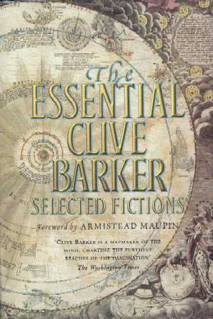
Worum es geht
Die Werkbilanz zur Halbzeit: über siebzig Auszüge aus Romanen und Theaterstücken, dazu vier vollständige Erzählungen — von Barker selbst ausgewählt und in dreizehn thematische Kapitel geordnet. Den Kern bildet eine 12.000 Wörter lange Einleitung über seine Arbeitsweise und die Kindheit, die ihn zum Schriftsteller machte. HarperCollins, 1999.
Clive über das Buch
-
Für die Auswahl zog sich Barker mit sämtlichen eigenen Büchern auf die Hawaii-Insel Kaua’i zurück und las alles neu — mit der Frage, was ihm nach zwanzig Jahren wirklich wesentlich ist.
Channel 4 Big Breakfast, 1999
-
Dabei überraschte ihn, wie wenig Horror er fand: weit weniger Spezialeffekte als gedacht — und Bücher, die vor allem von Menschen handeln.
The Scotsman, 1999
-
Beim Wiederlesen entdeckte er Geschichten in Geschichten: Erzählungen, die in Romanen eingebettet lagen und sich herauslösen ließen — wie die Zelim-Episode aus Galilee, die er in voller Länge übernahm.
Revelations-Interview, 1999
-
Ein Buch mit doppeltem Zweck, sagte Barker: eine Einführung für Leser, die sein Werk noch nicht kennen — und für alle anderen die Retrospektive zur Karrieremitte, das Material, an dem er gemessen werden will.
IGN For Men, 1999
Ausgaben
Klick vergrößert das Cover
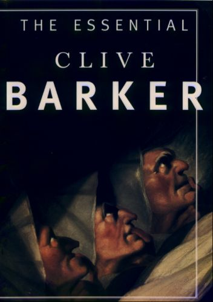
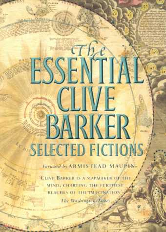
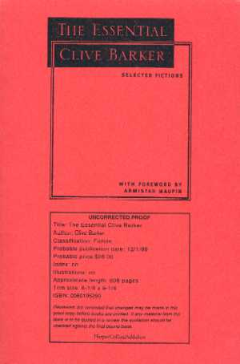
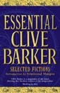
Clive Barker’s First Tales
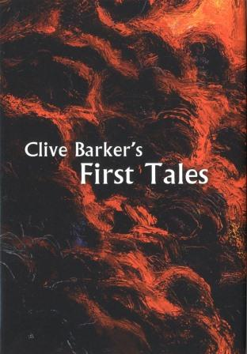
Worum es geht
Barkers Anfänge zwischen zwei Buchdeckeln: The Wood on the Hill und The Candle in the Cloud, zwei Erzählungen aus seiner Liverpooler Jugend, 2013 gesammelt bei SeraphimInk erschienen — dem Verlag seiner eigenen Firma Seraphim.
Clive über das Buch
-
In seiner Anmerkung zum Band beschreibt Barker die beiden Geschichten als die zwei Grundformen der Fantastik: Hier bricht das Unirdische in unsere Welt ein (The Wood on the Hill), dort reisen Menschen aus unserer Welt in eine andere (The Candle in the Cloud) — Yin und Yang, entgegengesetzte Kräfte mit demselben Ziel: Offenbarung.
Author’s Note · First Tales, 2013
Ausgaben
Klick vergrößert das Cover
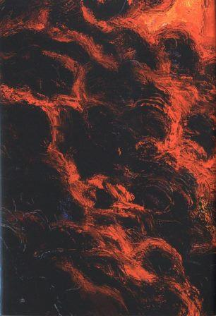
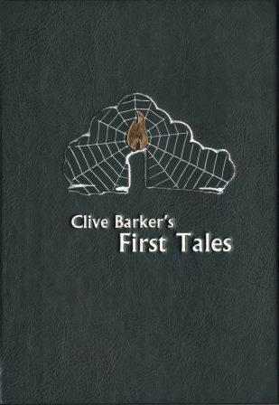
Tonight, Again
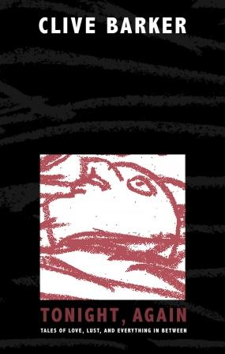
Worum es geht
Über dreißig kurze erotische Erzählungen, 2015 bei Subterranean Press erschienen; 2018 folgte die britische Ausgabe bei SST Publications. Der Band steht am Ende einer zwanzigjährigen Suche nach der richtigen Form: Unterwegs hieß die geplante Sammlung The Scarlet Gospels, Journeyman und Black Is The Devil’s Rainbow.
Clive über das Buch
-
Schon 1996 rang Barker mit seinem Verlag um die kurze Form: Ein Roman verkaufe sich fünfmal besser, hieß es — dabei liebe er Kurzgeschichten, das Schreiben wie das Lesen, und die Absagen frustrierten ihn maßlos.
Interview, 1996
-
2001 sollte die Sammlung noch The Scarlet Gospels heißen — mit einer gleichnamigen Novelle als Herzstück, aus der Jahre später der Roman wurde.
Lost Souls, 2001
-
Auch gegenüber der deutschen Fanseite That’s Clive! bestätigte er 2005: Die unveröffentlichten Kurzgeschichten kommen später in einem eigenen Band.
That’s Clive!, 2005
Ausgaben
Klick vergrößert das Cover
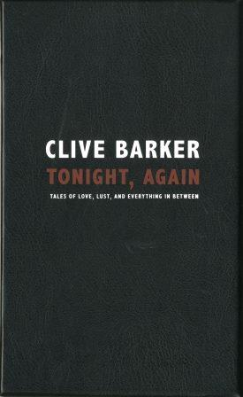
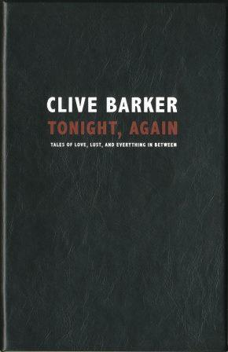
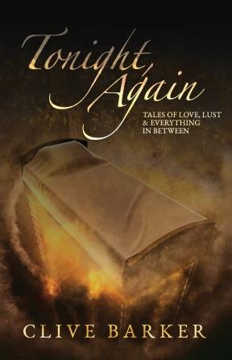
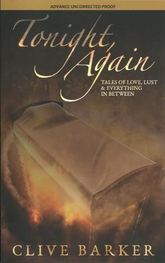
The Body Book
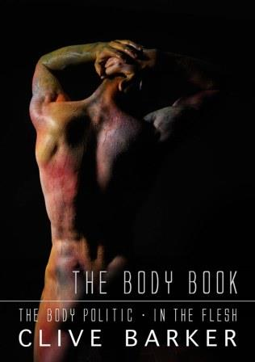
Worum es geht
Zwei Geschichten aus den Books of Blood über den Aufstand des Fleisches, neu gebunden: The Body Politic — die Hände eines Mannes kündigen ihm die Gefolgschaft — und In the Flesh. Dark Regions Press brachte den illustrierten Band 2017 in drei limitierten, signierten Hardcover-Ausgaben heraus, 2018 folgte das Taschenbuch.
Ausgaben
Klick vergrößert das Cover
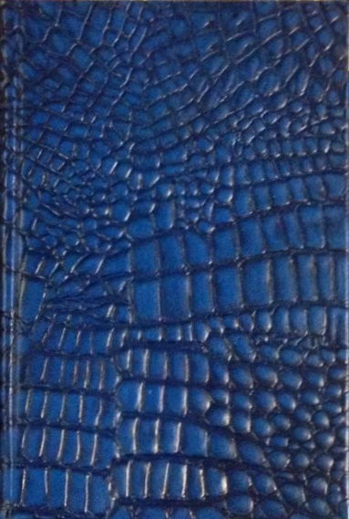
Cover-Abbildungen: Revelations-Archiv (clivebarker.info) · Artwork © Clive Barker bzw. der jeweiligen Verlage